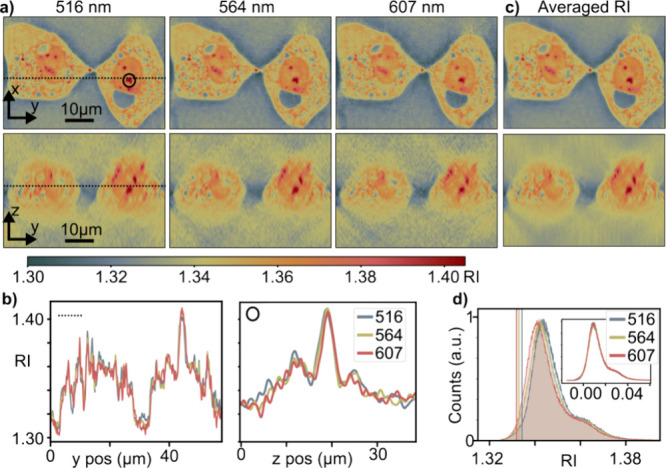

SEE INSIDE A TRANSPARENT CELL
Light goes through.
Information comes out.
A cell can be almost invisible in brightness, yet still delay a light wave. ODT measures that change from many directions and builds a 3D map of the cell’s refractive index—without needing a fluorescent label.
01 / LOOK FROM MANY DIRECTIONS
The light moves.
The cell stays still.
Each illumination direction gives a different view of how the cell changes the light. The camera records an interference pattern, or hologram, containing both brightness and phase information.
Illustrative, slowed animation. This example uses 360 directions around a cone; the number and arrangement of directions vary between instruments. The hologram is simulated.
What does the illumination angle mean?
At each setting the beam is collimated: its rays are parallel. Their tilt relative to the microscope axis is set by the illumination numerical aperture (NA). Rotating this tilted beam traces a cone. The collection objective has a separate NA.
Model medium n = 1.333 · collection NA = 1.0 · polar angle = asin(NA / n)
02 / WHAT A TRANSPARENT CELL DOES TO LIGHT
Same brightness.
A different place in the wave.
The wave that passes through a cell can emerge delayed relative to a wave travelling only through the surrounding medium. This shift in the wave’s cycle is phase delay. More refractive-index contrast, or a longer path through the cell, produces a larger delay.
Wave spacing and speed are exaggerated. This model keeps amplitude constant to isolate phase.
One phase image does not tell you where the delay happened.
A thick region with a modest refractive-index difference can delay light as much as a thinner region with a larger difference. Looking from many directions helps separate these possibilities and locate the structure in 3D.
How is this different from ordinary phase-contrast microscopy?
Conventional phase-contrast microscopy turns phase differences into visible brightness differences. ODT recovers quantitative optical-field measurements and combines many views to estimate refractive index throughout a volume. It is often called 3D quantitative phase imaging. Simply stacking conventional phase-contrast images is a different measurement.
phase delay ≈ (2π / λ₀) × (ncell − nmedium) × path length
This simple path-length picture builds intuition. The ODT reconstruction also accounts for diffraction: light is a wave and spreads as it passes through the sample.
03 / FROM MEASUREMENTS TO A VOLUME
Decode. Combine.
Look inside.
The optics behind this step
Each voxel holds a refractive-index estimate.
The result is a 3D optical-property map. You can move through slices, measure cell shape and volume, and compare internal contrast. Refractive index alone does not uniquely identify a protein or an organelle; specific biological interpretations need additional evidence.
Why is the depth view less sharp?
The microscope can illuminate and collect only a limited range of directions. Some information about variation along the depth axis is never measured—the missing cone. This can blur or elongate structures along z. More views help sample the accessible region, but a full rotation around one cone does not measure every possible direction.
What is simulated here?
The hologram and wave animations are teaching models. The single-frame example uses numerical Fourier filtering to recover a synthetic phase cell. The volume example separately filters a 64³ synthetic refractive-index phantom using the Fourier coverage of the selected illumination directions. It illustrates what information is available; it is not an end-to-end reconstruction of the displayed holograms.
The experimental HeLa images below come from a published study. They are distinct from the simulations. Practical ODT also needs calibrated illumination directions, background and aberration correction, suitable sampling, and a scattering model appropriate to the specimen.
04 / WHAT THIS LOOKS LIKE IN REAL CELLS
Two HeLa cells.
No fluorescent color code.
These are published ODT measurements of fixed HeLa cells. The colors encode refractive index, not fluorescence intensity. The lateral view shows cell outlines and internal contrast; the depth view shows how that contrast is distributed through the cells.
Read the color scale as an optical property. A different color does not, by itself, establish the identity of a cellular structure.
Hörmann et al. (2024), Ultrabroadband Optical Diffraction Tomography, Figure 6a, 516 nm. Cropped views; original colors, axes and 10 µm scale bars retained. © The authors, CC BY 4.0.
View the complete published figure

FURTHER READING
Hörmann et al. · experimental cells and reconstruction workflowKim et al. · 3D refractive-index imaging of biological cells